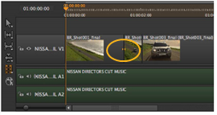

的 剃刀 工具允许您将剪辑实例剪切到单独的部分，以便您可以删除部分或重新排列时间轴上的项目。激活 剃刀 和 剃刀所有 通过单击工具或按 R .
将光标放置在目标剪辑实例上，如果允许剪切，请单击以剃刀切割剪辑实例或所有剪辑实例，具体取决于您选择的工具。
提示: 剃刀光标指示是否允许剪切，例如对现有编辑。
您也可以使用从菜单栏在播放头位置应用切割 时间线 > 剃刀选择 ,或使用所有轨道 时间线 > 剃刀所有 .
提示: 使用 C (在选定播放头下的剪辑实例) 和 转变 C 使用键盘快捷键或右键单击关联菜单来执行相应的剪切。
的 加入 工具只能用于剃刀剪辑实例之间的编辑点，由编辑处的黄色箭头表示。

|
|